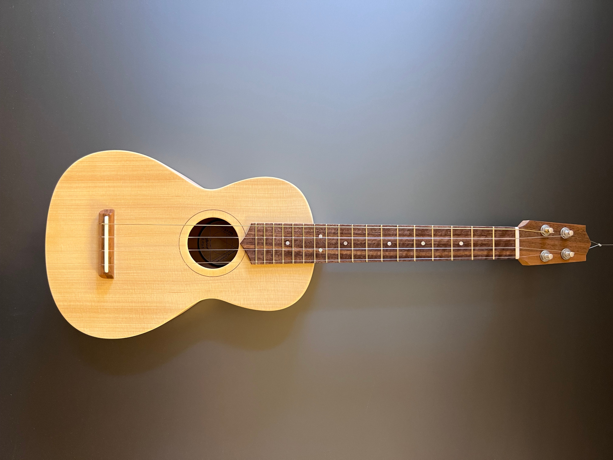
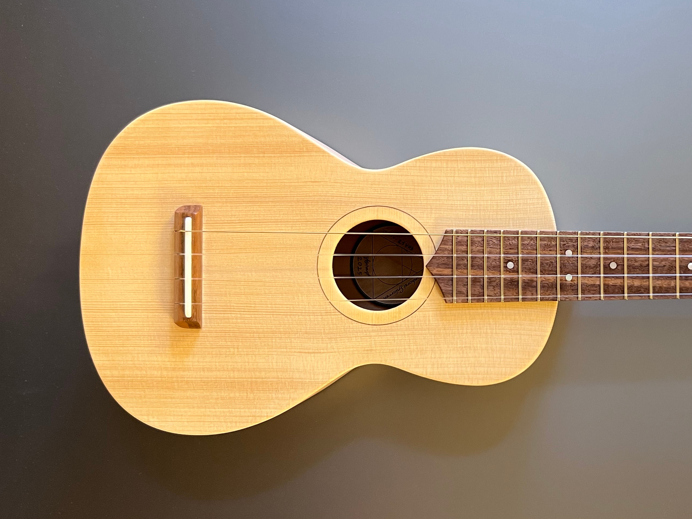
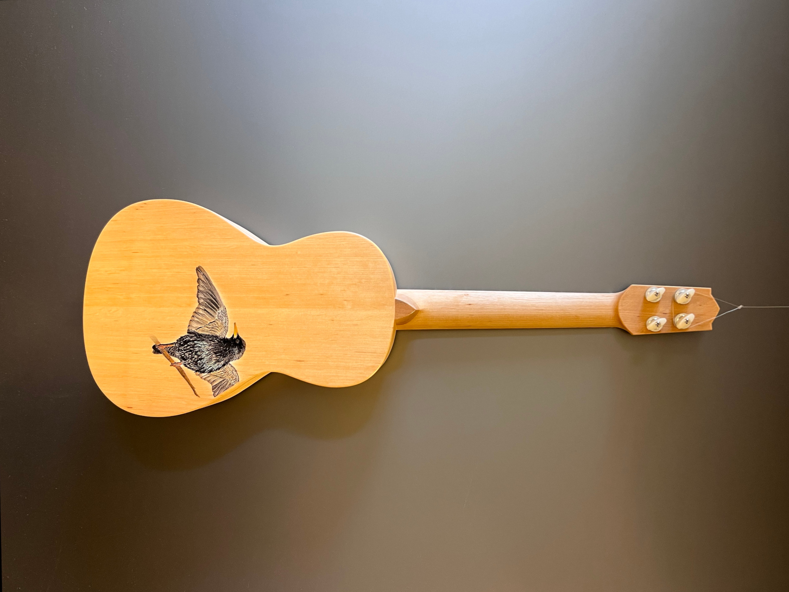
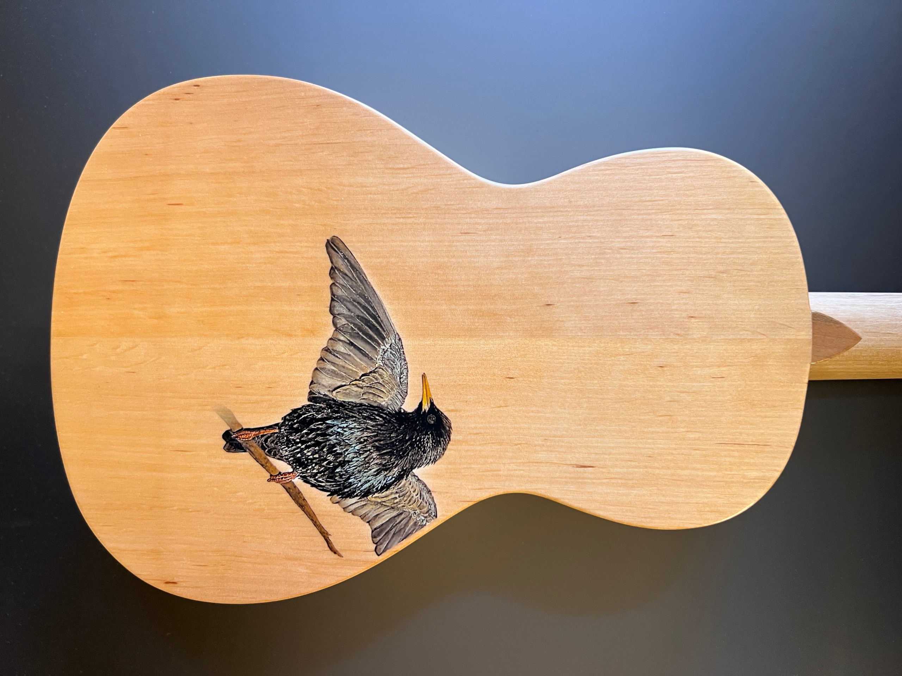

×

×

×

×

Menu
Home
Instrumente
Reparatur
Kontakt
About
Tenor Modell "Star" (Boden)
❮
❯
Decke: Fichte
Korpus: Erle
Hals: Erle
Griffbrett: Nusbbaum
Lack Boden: Nitro seidenmatt
Finish übrige Teile: Hartöl
Sattelbreite: 35mm
Mensur: 433,82mm
Bünde: 18
S/N: 21V03
Preis: verkauft
Produktanfrage:
info@steinhorst-gitarren.de
Steinhorst Gitarren
Tristan Steinhorst
Email: info@steinhorst-gitarren.de
Telefon: 015731663922
Lenkersheimer Straße 10, 90431 Nürnberg
Impressum
Datenschutzerklärung
Home